清风[图说棋理]五子棋知识帖子目录ShowPost.asp?ThreadID=4541
图说棋理（阵法篇一）八卦阵1
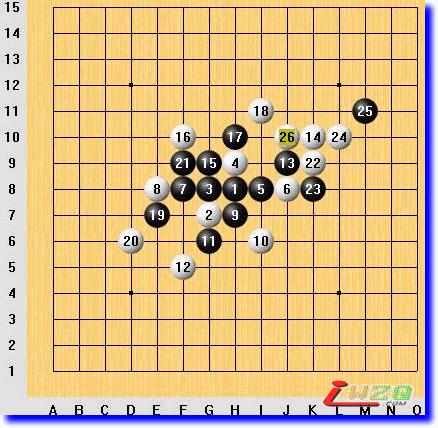
五子棋玩儿家们经常提到“八卦阵”，什么是八卦阵？八卦阵就是一种高效率的防守阵法，如果对方不得其要领，八卦阵能够取得很优越的外势。我现在用通俗的语言描述一下这里面的道理。
如果你想用渔网打鱼，就需要有预谋地布下一张网，把鱼儿“网”在里面慢慢收拾。但大家都知道渔网和渔叉的区别，渔叉是有直接攻击性的，渔网没有直接的攻击性，它的使用是先布网，轰赶、控制，最后收网，再杀鱼。
我们先说布网的问题。
第一，布网的效率。用一定数量的材料，最大效率地织网，很自然遇到一个疏密的问题，过疏则网眼过大，易漏；过密则效率不高，自己就成鱼早被别人网在里面了。怎样才算疏密适当呢？那要看网是做什么用的了。下五子棋用的，疏密程度要以使对方不能在网里面形成五连为标准，那么很自然就是只留有四个空点为标准了。以这样的标准和统一的织法来织网，就是那个“马步”相连的网了。
第二，布网的缓急。当鱼儿看到有一张网出现在眼前，很自然就会躲避、突围，所以在布网的时候要预测鱼儿逃跑的方向，逃跑的方向就是布网的急所，要先急后缓。
再说收网的问题。
第一，收网的时机。当鱼儿在网中横冲直撞的时候，不是收网的最好时机，急于收网，网容易被撞破。当鱼儿气力枯竭的时候，才是收网的时机。
第二，收网的方法。最基本的收网方法是用一颗棋子与网上已有的节点同时形成三个活二，这样，一张渔网就摇身一变，成了一把鱼叉，然后不停地叉啊叉，就把鱼儿收拾了。
图例仅为示意图。黑21是鱼儿气力枯竭的表现。白22是把鱼网变成鱼叉的方法。
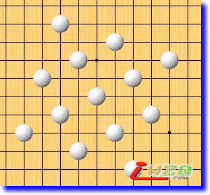
八卦阵示意图。注意网格横竖方向和斜方向距离均为4格。
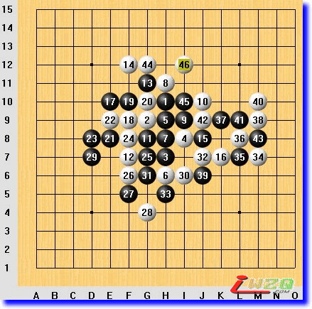
这盘棋是八卦阵在实战中的运用的一个例子。
无禁规则，中央自由开局。
白4I8，小马步防守。黑5、黑7挺给面子，让白棋下成八卦式。
一直到黑15，白棋按八卦防守着，倒也省心。
黑17E10似乎意识到这样下不行，让白棋把路都给堵死了，终于开始跳了。
黑跳三后再活三，却逼迫白棋被动成活三了，只好再挡， 结果增加了白22E9的防守效率，一子挡了黑棋两个活二。
接下来又是黑棋逼迫白棋进行的交换，到黑27F5防，白棋得到了先手。
这时候，我仔细分析了一下局面。白棋上面似乎有些攻势，但经过目测，没有发现胜棋，于是白28G4继续在辽阔的方向防守。
黑29D7有些莫名其妙，或许是看白28没有作为？
看清黑棋在左边没有VCF，白棋在I6活三后即便黑棋挡左边也只能做VCT，况且白棋D9还能冲一下，延缓黑棋的进攻。想清楚后，白30在I6试探性进攻。
黑31没有去做VCT，大概也看到那是不赶趟的，挡在了G6。
白32J7再跳三，黑33H5依然挡中间，这下可是给了白棋机会了！
白34、36连续两个跳三后，突然发现K7-L8那个活二不知道该向哪里活三了！
向上M9活三的话，8线上空间不够了；向下J6活三的话，对方I5有反三！
这时候我想，无论如何也不能让对方反三啊，就硬着头皮向上活三了。
这时候黑39J6犯了错误，大概是怕白棋冲了再冲？
白40M10之后，黑唯一强防为M8，给白棋一个演示VCF的机会（黑41如果下M8，白棋有个VCF，留给初学者做题用吧），但黑棋看到大势已去，随手下了黑41L9冲四，再防M8的时候，白棋G12很简单地取胜了。
这盘棋要说明的是：1、黑棋15手之前让白棋形成八卦阵，是个很失败的战略；2、黑29明显落后手，缓招；3、黑39没能沉下心来认真计算。希望初学者引以为戒。
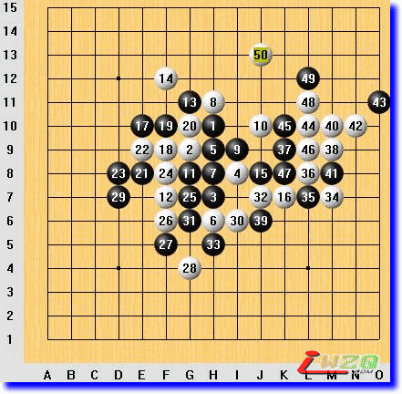
变化参考图1
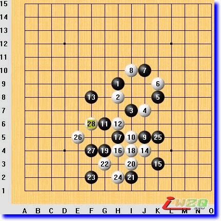
有很多人问过我八卦阵的破法，我总是回答：死八卦阵易破，活八卦阵难破。现有一典型的实战对局，也许对想解破八卦阵奥秘的人有所启发。
本局棋无禁手规则，偏移溪月开局。
前8手棋黑白双方各自形成一个八卦单位，黑9白10各自发展自己的八卦体系，黑11G6占据了双方共同的八卦阵点，白12只好变形，防黑棋双二同时自己成活二。这时候如果黑方随即变形，这盘棋将演变成“太极推手”，但黑13没有应变，有些“死八卦”的苗头。这给了白棋稍纵即逝的进攻机会，至白28F6，白棋双三取胜。
对于八卦阵我不作过多的分析了，强调一点就是八卦阵只是一种思想理念，要灵活运用才能取得满意的效果。希望大家回帖对“八卦阵”这一常见阵型作出总结或发表体会，以提高朋友们的五子棋水平。
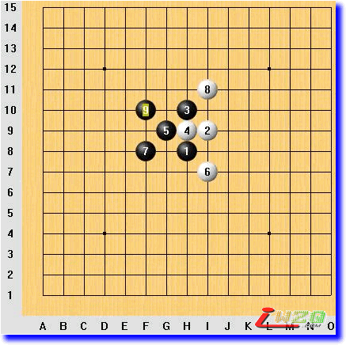
燕阵是中国古老的五子棋阵法之一，是黑必胜棋形。燕阵变化繁多，近些年来发展创新出一些更简洁的胜法，这里介绍经典变化之一。
棋行至黑9，这个棋形即为燕阵。请看二楼后续变化图。白10、12以攻为守，是比较强的防守之一。棋行至白14，黑棋开始以攻取势。黑19，关键性做棋，白20、22、24为最强防守。之后，黑棋25、27为示招进攻，黑29含招攻守兼备，31引招示招同时形成，此时白棋没有VCF，败定。
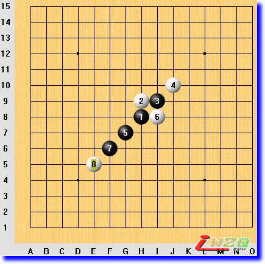
剑阵是中国古老的五子棋阵法之一，是黑必胜棋形。近些年的花月局定式研究发展很快，黑棋胜法很多，剑阵在高手对局中已不常见，民间下法中经常会出现。
棋行至白8，这个棋形即为剑阵。参见变化图。黑9以守待攻，白10、12强防，黑13关键做棋。白14F9活三，黑15E10，胜点；白14E8，黑15E7，胜点。白棋各种防守均不能奏效。参考图中只列举两种变化，其他的变化请自行拆解。
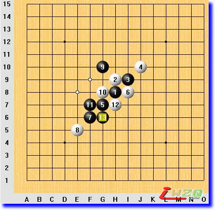
变化参考图1
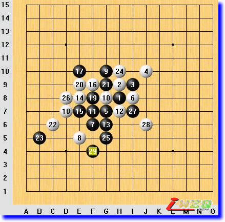
变化参考图2
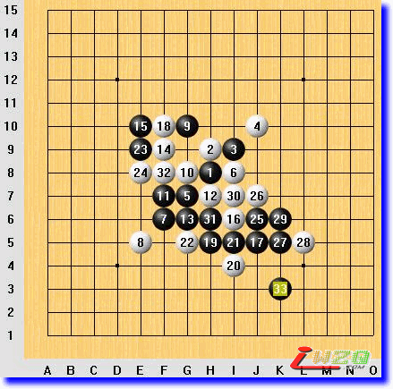
变化参考图3
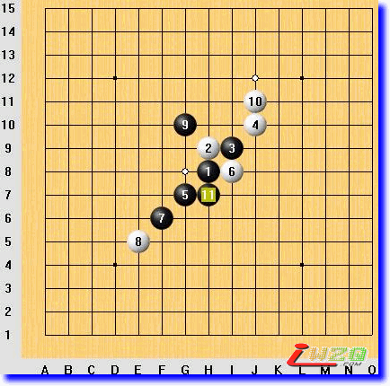
白10J11，黑11H7胜。
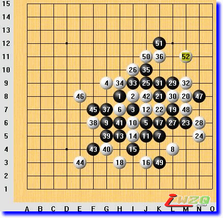
剑阵黑棋失败的一局棋
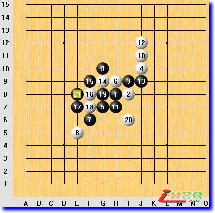
怎么必胜还要看白棋怎样下呢，我不打算“地毯式终结”某个变化，这里举一个例子吧
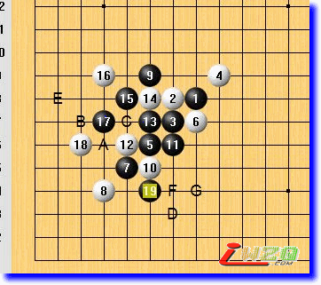
黑19本身为示招，但其更深远的意义在于无论白棋在A、B、C、D、E任何一点防守，黑棋都有F或G双示（一子双杀）点的产生。
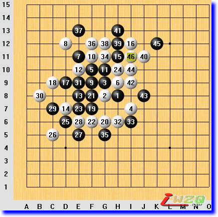
剑阵黑棋失败一例
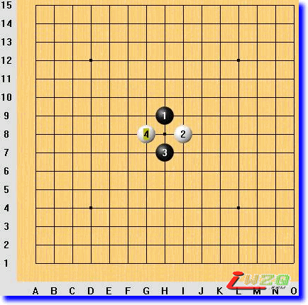
黑1、白2、黑3、白4四颗子，形成一个十字形，此阵型是个黑必胜阵型。
黑5活三，白6必然，黑7团角，白8挡二活二最强防守。黑9活三，白10反三，黑11冲四后白必挡，黑13再反三。黑15活三进攻。（中间过程图）
如果白16防守I5，黑17活三，如果白18挡上面，黑19一示一含，胜定！（变化参考图1）
如果白18防守下面，黑棋VCF胜定！（变化参考图2）
如果白16防守E9，黑17活三，如果白18挡上面，黑19一示一含，胜定！（变化参考图3）
如果白18防守下面，黑棋VCF胜定！（变化参考图4）
白8如果挡黑棋的眠三，黑9活三后速胜！（变化参考图5）白10如果反向防守，图5旋转180度就是黑棋的胜法！
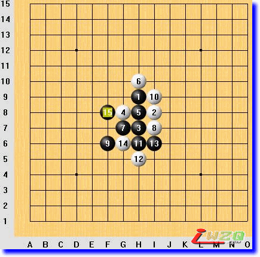
中间过程图
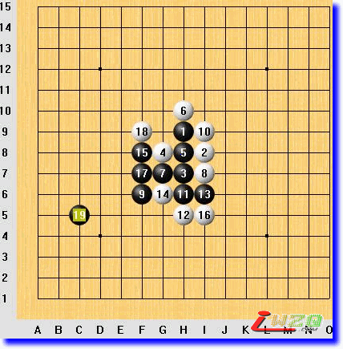
变化参考图1
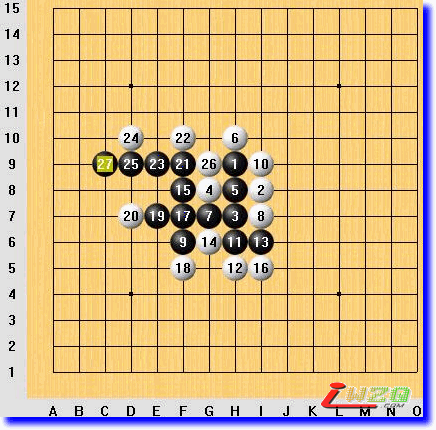
变化参考图2
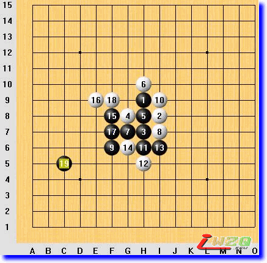
变化参考图3
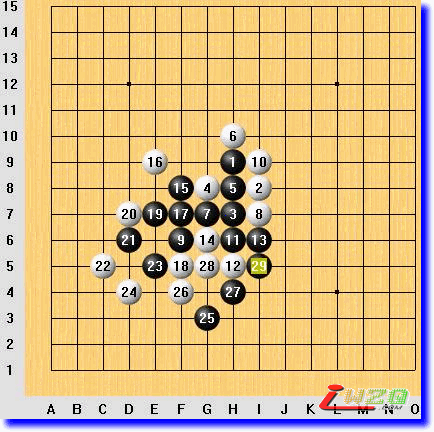
变化参考图4
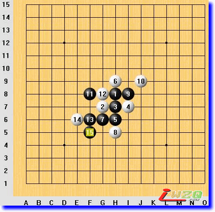
变化参考图5